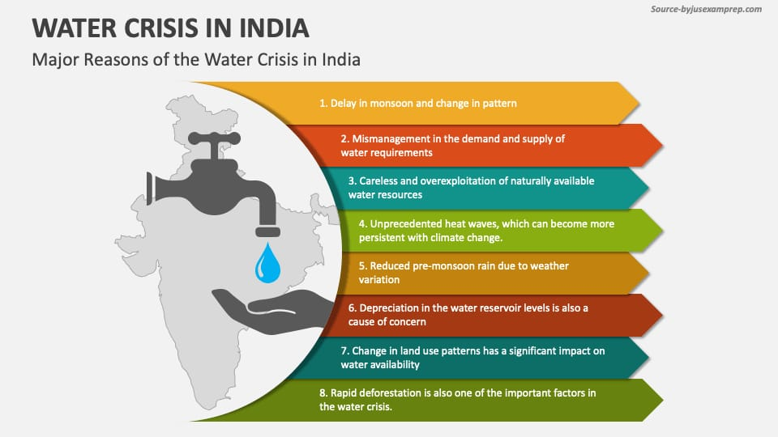

At Tidesweeper, we are driven by a fundamental belief: access to clean water and sanitation is a basic human right. Welcome to our online hub where we passionately advocate for and actively contribute to creating a world where everyone has access to safe water and proper sanitation.
Our Mission:
We are dedicated to promoting and implementing sustainable solutions that address the critical issues of clean water scarcity and inadequate sanitation. Through our initiatives, we aim to uplift communities, enhance public health, and foster environmental sustainability.
Featured Initiatives/Projects:Explore our ongoing and notable projects that are making a real impact on the ground. From implementing water purification systems in remote villages to establishing sanitation infrastructure in underserved areas, each project is a testament to our commitment to positive change.
Discover our comprehensive cleaning services to keep the lakes and ponds clean.
As of my last knowledge update in January 2022, India has been facing significant water challenges, and the water crisis is a complex issue with multiple contributing factors. Some key aspects of the water crisis in India include:
1.Uneven Distribution: Water resources in India are not evenly distributed across the country. Some regions face water abundance, while others suffer from acute water scarcity. Northern and western parts of India, particularly states like Rajasthan, Gujarat, and Maharashtra, are known for facing severe water shortages.
2. Groundwater Depletion:Excessive extraction of groundwater for agriculture, industry, and domestic use has led to a depletion of aquifers. This over-extraction has been a major contributor to the water crisis, especially in areas heavily dependent on groundwater.
3. Droughts and Climate Change: India is susceptible to both droughts and floods, and climate change is exacerbating these extremes. Changing weather patterns, erratic monsoons, and increasing temperatures contribute to water stress in various regions.
4. Population Growth and Urbanization: population growth and urbanization have increased water demand, especially in urban areas. The lack of proper water management infrastructure in many cities further compounds the problem.
5. Water Pollution:Pollution of water bodies, including rivers and lakes, is a significant issue. Industrial discharge, untreated sewage, and agricultural runoff contribute to the contamination of water sources, affecting both the quantity and quality of available water.
6.Inefficient Agricultural Practices: Agriculture is a major consumer of water in India. Traditional and often inefficient irrigation methods contribute to water wastage. Encouraging sustainable and water-efficient agricultural practices is crucial to addressing the crisis.
7.Policy and Governance Issues:There are challenges related to the implementation of water management policies, inefficient water use, and inadequate governance. Improving water governance and implementing effective policies are crucial for sustainable water management.
Efforts are being made at various levels, including government initiatives, community-led water conservation projects, and awareness campaigns, to address the water crisis in India. However, the situation is dynamic, and ongoing efforts are required to achieve long-term sustainability in water management. For the latest and more specific information, it is recommended to refer to recent reports and updates from reliable sources.Water scarcity is seen as the most significant and potentially most impactful component of the wider climate crisis, and researchers say that large Asian economies like India and China will be the most affected from these water shortages.
Asia is an industrialization hub that is experiencing the most rapid rates of urbanization, and this would require a copious amount of water, Arunabha Ghosh, the CEO of the Council on Energy, Environment and Water, told CNBC on the sidelines of Singapore's annual Ecosperity Week last Tuesday.
Global fresh water demand is expected to outstrip supply by 40% to 50% by 2030. Ghosh warned that water scarcity must not be viewed as a sectoral issue, but one that “transcends the entire economy.”
India, now the world's most populous nation, will be the hardest hit from water scarcity. Despite holding 18% of the world's population, it only has enough water resources for 4% of its people, hence making it the world's most water-stressed country, the World Bank said.
The South Asian nation relies tremendously on its monsoon season to meet its water demands, but climate change has caused more floods and droughts to hit the country, and has exacerbated its water shortage.
Sustainable Development Goal 6 (SDG 6) is one of the 17 goals established by the United Nations as part of the 2030 Agenda for Sustainable Development. SDG 6 specifically focuses on ensuring the availability and sustainable management of water and sanitation for all. Pollution plays a significant role in influencing the progress and challenges related to SDG 6. Here's how pollution is linked to SDG 6:
1. Target 6.3: Water Quality:
- Target 6.3 of SDG 6 specifically addresses water quality. It aims to "improve water quality by reducing pollution, eliminating dumping and minimizing release of hazardous chemicals and materials, halving the proportion of untreated wastewater and substantially increasing recycling and safe reuse globally."
- Pollution from various sources, including industrial discharges, agricultural runoff, and untreated sewage, directly impacts water quality, making it a major obstacle to achieving this target.
2. Impact on Drinking Water: - Pollution in water sources poses a significant threat to the availability of safe and clean drinking water. Contaminated water can lead to waterborne diseases, affecting the health of communities.
3. Wastewater Management: - SDG 6 emphasizes the need for proper wastewater treatment and safe disposal. Pollution from untreated or inadequately treated wastewater can contaminate water bodies, affecting both human health and the environment.
4. Ecosystem Health: - Water pollution has detrimental effects on aquatic ecosystems. It can lead to the degradation of biodiversity, disrupt ecosystems, and harm the flora and fauna that depend on clean water.
5. Sanitation Challenges: - Pollution is closely linked to sanitation challenges, especially in areas where improper waste disposal contaminates water sources and undermines efforts to provide safe and sustainable sanitation facilities.
6. Impact on Vulnerable Communities: - Vulnerable and marginalized communities are often disproportionately affected by water pollution. Lack of access to clean water and sanitation services exacerbates inequalities, hindering progress toward SDG 6.
7. Cross-Cutting Nature of Pollution: - Pollution is a cross-cutting issue that affects multiple SDGs, including those related to health, biodiversity, and sustainable cities. Addressing pollution in water is integral to achieving a range of sustainable development objectives.
8. Need for Integrated Approaches: - Achieving SDG 6 requires integrated and holistic approaches to water management, addressing pollution at its sources and ensuring the sustainable use of water resources.
9. Monitoring and Reporting: - Monitoring and reporting mechanisms are crucial to track progress toward SDG 6. This includes assessing water quality, wastewater management, and the impact of pollution on water and sanitation services.
Explore the following resources for more information on cleanliness and sanitation: